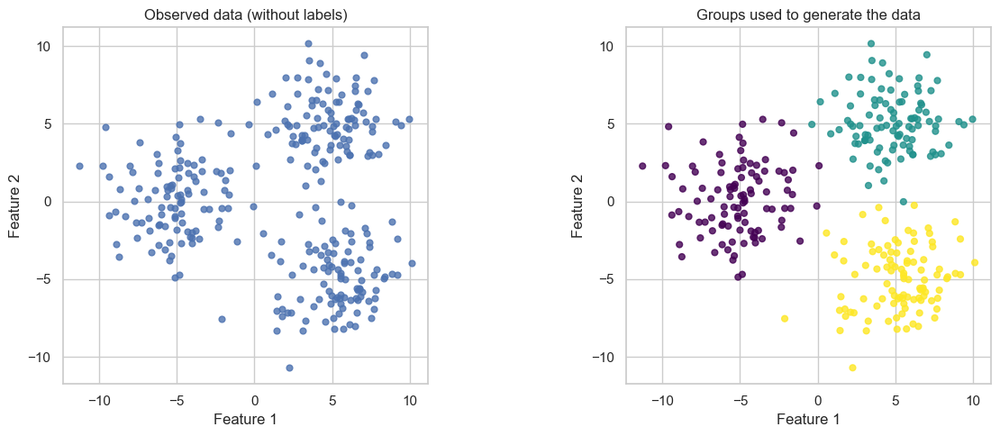
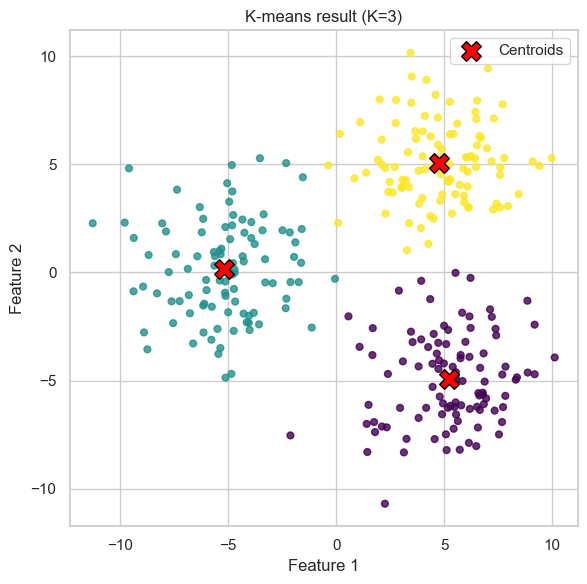

In this notebook, we will use k-means to group observations without giving the algorithm any labels. We will start with a small two-feature example, fit a model using scikit-learn, and then see what happens when we change the number of clusters.
K-means assigns each observation to one of \(K\) clusters. Each cluster is represented by its centroid, the mean of its assigned points. The algorithm aims to make the sum of squared distances from points to their assigned centroids as small as possible:
Here, \(c_i\) is the cluster assigned to observation \(i\), and \(\boldsymbol{\mu}_{c_i}\) is that cluster’s centroid.
Lloyd’s algorithm is a common way to find a k-means solution: it alternates between assigning points to their nearest centroid and updating the centroids. Other algorithms can also be used for k-means. To see Lloyd’s algorithm one step at a time, try the k-means exploration page.
1. Create and inspect the data
We use the same three-blob example as last semester: 300 points with two features. The plotting colors on the right show the groups used to generate the synthetic data; the model will not receive those labels. For real unlabeled data, such labels are often unavailable.
import matplotlib.pyplot as pltimport numpy as npimport seaborn as snsfrom sklearn.cluster import KMeansfrom sklearn.datasets import make_blobssns.set_theme(style="whitegrid", context="notebook")X, true_group = make_blobs( n_samples=300, centers=[[-5, 0], [5, 5], [5, -5]], cluster_std=2.0, random_state=8,)print(f"Data shape: {X.shape} (samples, features)")fig, axes = plt.subplots(1, 2, figsize=(13, 5))axes[0].scatter(X[:, 0], X[:, 1], s=24, alpha=0.8)axes[0].set_title("Observed data (without labels)")axes[1].scatter(X[:, 0], X[:, 1], c=true_group, cmap="viridis", s=24, alpha=0.8)axes[1].set_title("Groups used to generate the data")for ax in axes: ax.set(xlabel="Feature 1", ylabel="Feature 2") ax.set_aspect("equal", adjustable="box")fig.tight_layout()plt.show()
Data shape: (300, 2) (samples, features)

2. Fit a k-means model
We choose \(K=3\) for this example. fit_predict fits the model using only the feature matrix X and returns a cluster assignment for every point. cluster_centers_ contains the fitted centroids, and inertia_ is the within-cluster sum of squared distances. The cluster numbers are arbitrary: cluster 0 does not necessarily correspond to generated group 0.
K-means can depend on its starting centers. Here, n_init=10 tries multiple initializations and keeps the result with the smallest inertia.
model = KMeans(n_clusters=3, n_init=10, random_state=42)cluster = model.fit_predict(X)centers = model.cluster_centers_print(f"Centroids:\n{centers.round(2)}")print(f"Within-cluster sum of squares: {model.inertia_:.1f}")fig, ax = plt.subplots(figsize=(8, 6))ax.scatter(X[:, 0], X[:, 1], c=cluster, cmap="viridis", s=24, alpha=0.8)ax.scatter(centers[:, 0], centers[:, 1], marker="X", s=200, c="red", edgecolor="black", label="Centroids", zorder=3)ax.set(title="K-means result (K=3)", xlabel="Feature 1", ylabel="Feature 2")ax.set_aspect("equal", adjustable="box")ax.legend()fig.tight_layout()plt.show()
Centroids:
[[ 5.23 -4.94]
[-5.17 0.15]
[ 4.78 5.09]]
Within-cluster sum of squares: 2614.2

3. What if we choose a different \(K\)?
In practice, we usually do not know how many groups are present. To explore the effect of \(K\), we will generate a second dataset with four groups, then fit models with \(K=3\), \(4\), and \(5\). The generating labels are not used to fit the models.
With too few clusters, some groups may be combined. With more clusters, a group may be split. Inertia generally decreases as \(K\) increases, so a smaller inertia alone does not tell us the best \(K\).